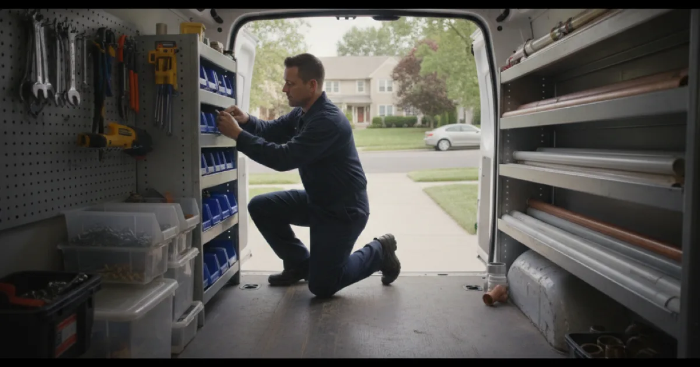

Our Plumbing Services
Everything we handle for homes and small businesses across Westchester County — based in Armonk, and the same honest, upfront approach whether it is an emergency or a planned job. Not sure which service you need? Call and describe it; we will point you the right way.

Drainage Services
Slow drains, backups, sewer problems, and sump pumps. If you are not sure whether your problem is inside the pipes or outside the house, our drain, sewer, and sump pump services — drainage services page sorts it out.
Septic System Services
On septic rather than municipal sewer? The plumbing side of septic-connected plumbing problems — diagnosing the tank versus the line to it.
Gas Line Services
Licensed, permitted, inspected gas line work and gas fitting — gas line services for homes and small businesses.
Bathroom Plumbing
The plumbing side of a bathroom project, from a single fixture to a full rough-in. See bathroom plumbing for remodels — the full bathroom plumbing overview.
Water Damage Repairs
When a pipe fails, we handle stopping water damage at its source — the repairs that stop the water; the drying is a separate trade. Burst and frozen pipe repair sit under general plumbing below.
General Plumbing
Our primary work is everyday plumbing for Westchester homes. These are grouped by the kind of problem you are actually having.
Emergencies, Leaks and Pipes
Water Heating
Fixtures, Appliances and Kitchens
Appliance Hook-Up and Laundry Plumbing
Washers, dishwashers, and laundry connected safely.
Learn MoreTreatment, Maintenance and Commercial
Not sure which one you need?
Describe the problem and we will tell you what it likely is and what it takes to fix.